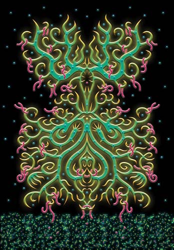
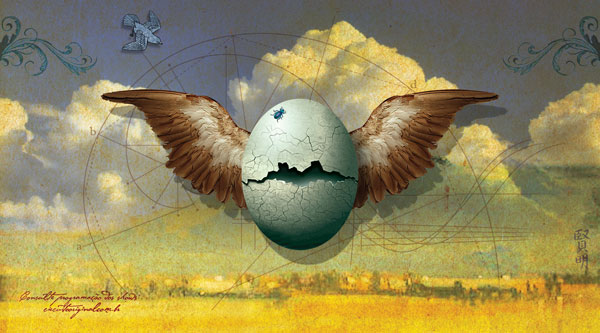
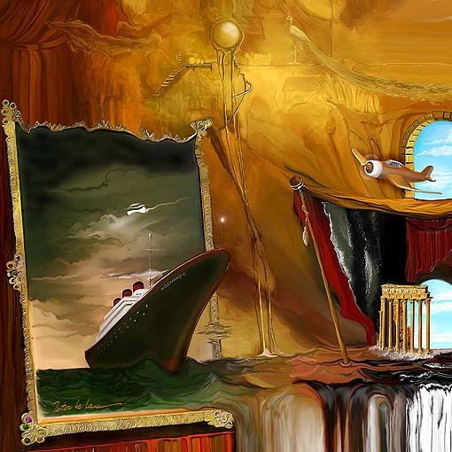
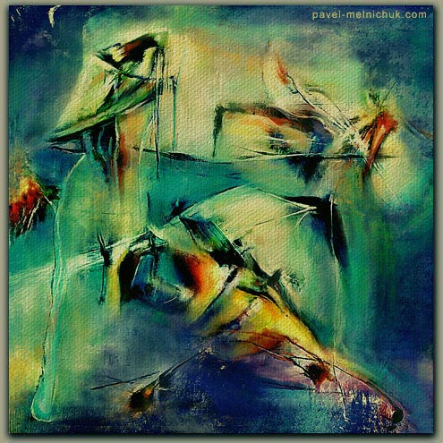
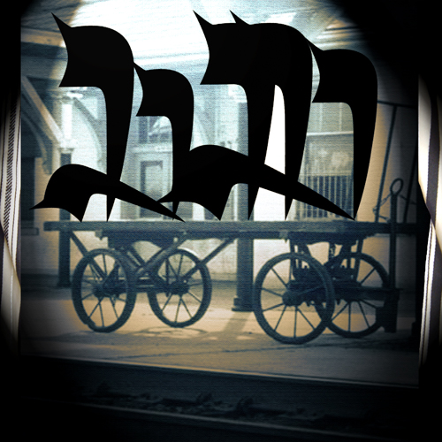
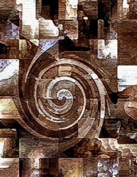
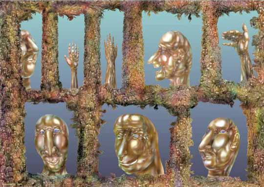

IMAGES OF THE DAY 88
11/21/2023 - 11/30/2023
11/21/2023
Mixed Technology
Astronomical Portraits and Exotic Machines
Pied Piper
by Ciro Marchetti
Click image to access artist's full exhibit
11/22/2023
Mixed Technology
an art of high spirits
Traps
by Masanta
Click image to access artist's full exhibit
|
|
 |
11/23/2023
Mixed Technology
On the Surreal Side
Winter Solstice
by Robert W. McGregor
Click image to access artist's full exhibit


11/24/2023
Mixed Technology
Illustrative
Flying
by Tom McKeith
Click image to access artist's full exhibit

11/25/2023
Mixed Technology
Digital Paintings
Normandy
by Peter Mc Lane
Click image to access artist's full exhibit

11/26/2023
Mixed Technology
Digital Brush Paintings
Melnichuk 01
by Pavel Melnichuk
Click image to access artist's full exhibit

11/27/2023
Mixed Technology
Holocaust Portfolio
Passage
by Martin Mendelsberg
Click image to access artist's full exhibit

11/28/2023
Mixed Technology
Cyber Tools and Effects
Untitled #10
by Romesh Mistry
Click image to access artist's full exhibit
11/29/2023
Mixed Technology
Compromised
Entangled
by JP Paul
Click image to access artist's full exhibit

11/30/2023
Mixed Technology
Computer Graphics
Wall
by Afanassy Pud
Click image to access artist's full exhibit
BACK TO IMAGES OF THE DAY 87
NEXT